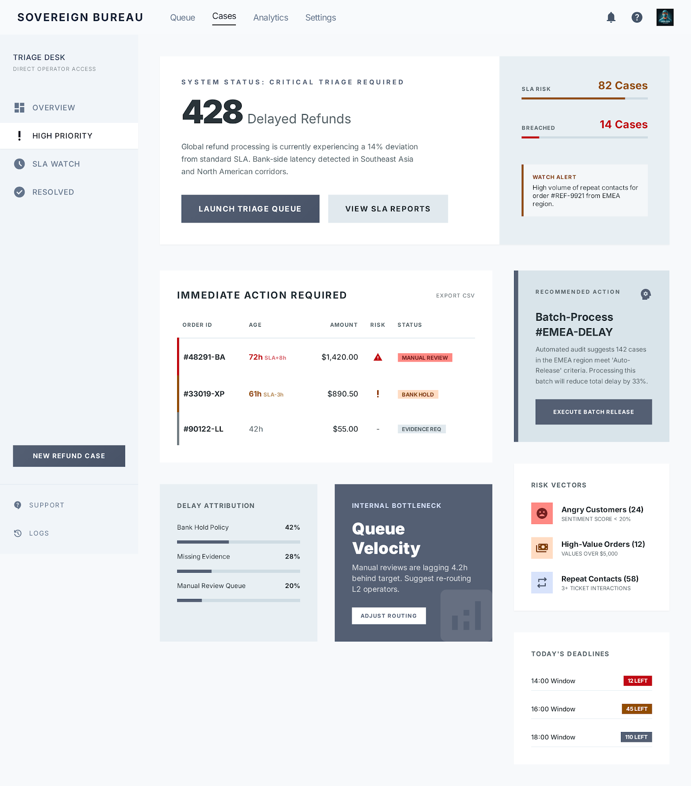

PF SAFE DEMO · 2026-03-24-p001
Refund Delay Triage Desk
A support ops dashboard that turns refund waiting cases into a prioritized action queue instead of a messy inbox.
ingest status
Imported from today’s Stitch exportPrimary Stitch export preserved as an artifact; PF-safe demo ships the approved visual screen locally for reliable hosting and preview generation.
- Source sanitized for PF hosting
- No external CDN/font dependency in live demo path
- Preview uses shipped local image artifact
